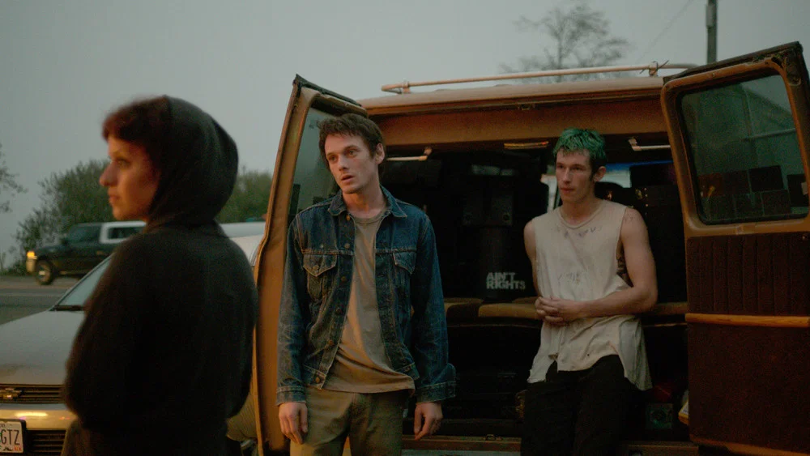
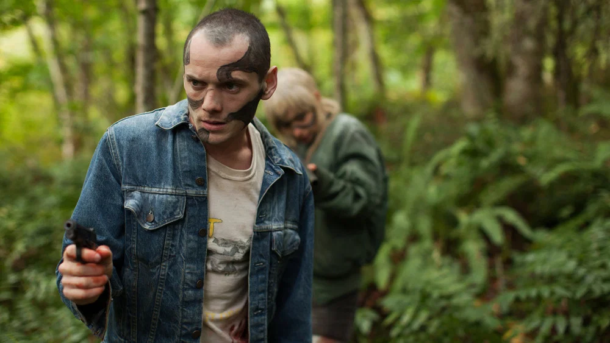

Domanda: qual è il gruppo che ti porteresti sull’isola deserta? Non quello che dici in giro per fare il figo. Quello vero. Quello che ascolti di nascosto in macchina quando nessuno ti sente. In Green Room se lo chiedono all’inizio, tra un furgone a secco e una benzina rubata col tubicino dai parcheggi altrui, e ognuno risponde con la serietà che si riserva alle grandi questioni dell’esistenza: chi dice Misfits, chi dice Bad Brains, chi fa il vago. Nessuno ammette niente. Siamo punk, diamine. Abbiamo una reputazione da difendere.
La nostra band di sfigati in tour per il nord-ovest americano decide di suonare davanti a una sala piena di skinhead nazisti, in un locale sperduto nei boschi dell’Oregon dove sono finiti perché era l’unica data che pagava. È un gesto bellissimo. È il gesto più punk che si possa fare. È esattamente quello che avrei voluto fare a 19 anni se avessi avuto il coraggio, una chitarra e la capacità di suonarla. Ed è anche, se ci pensate due secondi, una cazzata colossale.

Green Room è il terzo film di Jeremy Saulnier, quello che un paio d’anni prima aveva tirato fuori dal nulla Blue Ruin, un revenge movie piccolo, cattivissimo e girato con due lire raccolte su Kickstarter, con protagonista l’amico d’infanzia Macon Blair, qui nel ruolo di Gabe, lo scagnozzo più umano e disgraziato della compagnia. La trama si spiega in mezza riga: la band finisce il concerto, torna nel backstage per recuperare un telefono, trova una ragazza con un coltello piantato in testa e da lì in poi diventa un problema da risolvere. Per i padroni di casa, intendo.

E qui arriva Patrick Stewart. Sir Patrick Stewart, cavaliere della Regina, la voce più autorevole e rassicurante della storia del cinema dopo quella di Morgan Freeman. Fa il capo dei nazisti. Ma la cosa geniale non è il casting a sorpresa, è come lo usano: Darcy non è un fanatico che urla slogan con la bava alla bocca. Non fa comizi. Non alza mai la voce. Arriva al locale con la calma di un amministratore delegato chiamato a gestire una crisi di reparto, ascolta i rapporti, valuta le opzioni e decide. Tratta l’omicidio come una procedura di gestione del rischio. “Non finirà bene”, dice ai ragazzi chiusi nella stanza, col tono di chi comunica che la pratica del mutuo è stata respinta. Fa più paura lui così che tutte le svastiche tatuate in faccia della sala messe insieme.

Il punto è che Green Room mette in scena lo scontro tra due mondi che parlano lingue diverse. Da una parte i punk, che credono che musica, atteggiamento e magliette giuste siano un’arma, che suonare “Nazi Punks Fuck Off” ai nazisti sia una forma di lotta, che il simbolo conti. Dall’altra parte c’è gente a cui del simbolo non frega un cazzo. L’ideologia, per Darcy e i suoi, è più che altro una copertura, una divisa per tenere insieme la manovalanza: il locale è un’attività, dietro c’è un giro di droga, un cadavere che non deve uscire da lì e dei testimoni. Fine del discorso. I ragazzi, chiusi nella green room del titolo con una pistola sola e un ostaggio, devono imparare in tempo zero a ragionare come chi li vuole morti. E non sono attrezzati. Nessuno lo è.

Green Room è un assedio cattivo, secco, senza un grammo di grasso.
E qui il film diventa quello che a noi interessa: un assedio cattivo, secco, senza un grammo di grasso. Saulnier non ha la minima intenzione di farvi divertire con la violenza. Non ci sono coreografie, non ci sono eroi, nessuno scopre di essere un ex-marine. Le botte arrivano all’improvviso, sono goffe, sporche, durano tre secondi e lasciano conseguenze. C’è un braccio maciullato a colpi di machete attraverso una porta socchiusa. Il ritmo è da far paura. Un’ora e mezza scarsa, quasi tutta in due o tre stanze e un corridoio, e non c’è un momento in cui la tensione cali: il film ha la cattiveria di farti affezionare ai personaggi giusto il tempo necessario per toglierteli di mezzo quando meno te lo aspetti. Senza musica enfatica, senza ralenti, senza ultime parole.

E alla fine la domanda dell’isola deserta torna. Torna quando non c’è più nessuna posa da difendere, quando il pubblico è sparito, quando sei sporco di sangue e non hai più niente da dimostrare a nessuno. E la risposta, finalmente sincera, è la cosa più bella e più triste del film: è il momento in cui il punk smette di recitare e resta solo un ragazzo vivo per miracolo. Green Room è uno degli assedi più tesi e onesti degli ultimi anni, e la sua lezione è parecchio scomoda: l’arte e lo spirito punk forse non ti salveranno, ma ti permettono di stare dalla parte giusta.
— P. M.